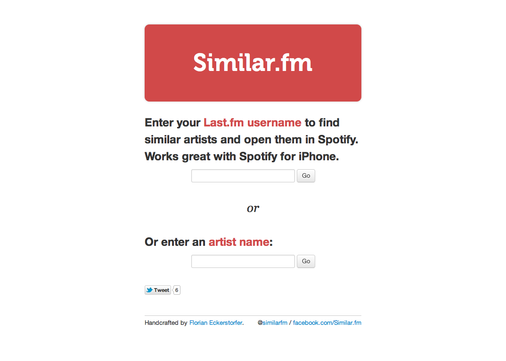
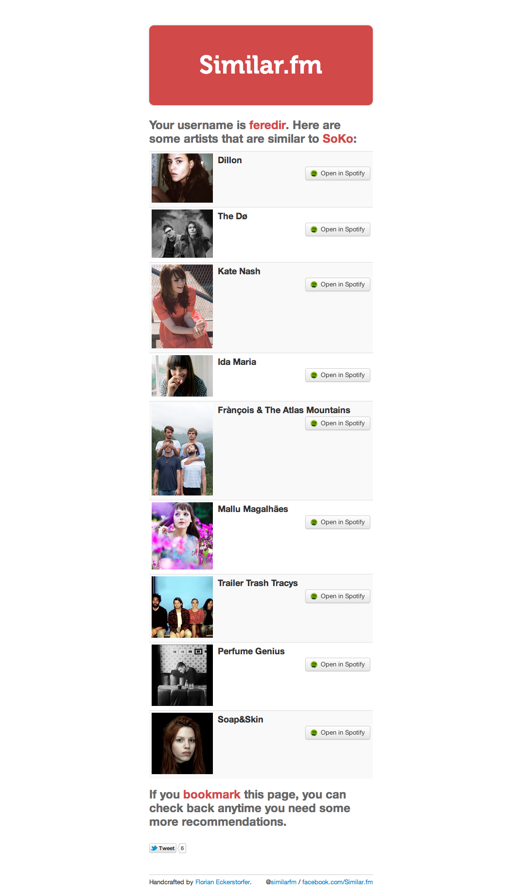

<div id="content" class="container">
    <div class="row">
        <div class="span8">

            <h2>Similar.fm</h2>

            <p>Open artists that are similar to the one your are listening to in Spotify with you one click.</p>

            <p><a href="http://similar.fm">http://similar.fm</a></p>

            <h3>Technologies &amp; Libraries</h3>

            <p>PHP, HTML, Bootstrap, LESS, Silex, Twig, Last.fm API, Spotify API</p>

            <ul class="screenshots">
                <li></li>
                <li></li>
            </ul>

            <p><small>Last modified: <em>{{ site.time | date_to_string }}</em></small></p>

        </div>
        <div class="span4">
            <strong>Related:</strong>
            <ul>
                <li><a href="../projects.html">Projects</a></li>
                <li><a href="../bio.html">About</a></li>
                <li><a href="../cv.html">Curriculum vitae</a></li>
                <li><a href="../contact.html">Contact</a></li>
            </ul>
        </div>
    </div>
</div>
